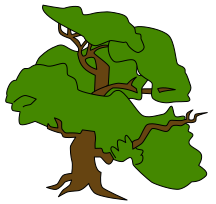
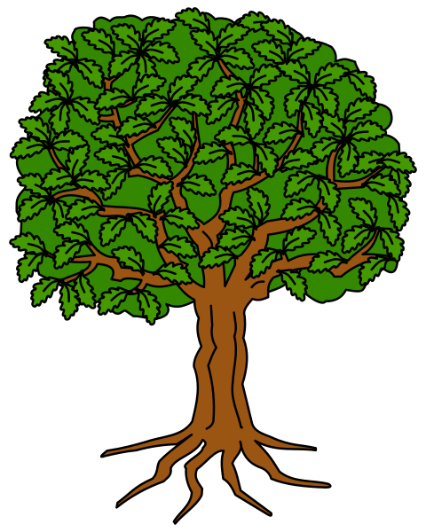

Public domain heraldic engravings — free to use, modify, and redistribute
Pros: Genuine 1909 engraving, public domain, detailed paths, symmetrical. Cons: Very formal/heraldic — looks like a coat of arms, not a natural tree. Small (400px). Dense symmetrical canopy doesn’t spread wide enough for 8-gen layout.

Pros: More natural shape, wider spread, simpler paths. Cons: Very small (216px), simplified leaf blobs rather than individual leaves. Would need significant redrawing to look vintage.

Pros: Tallest format (480×600), more vertical room for generations. Cons: Actually a coat-of-arms element — formal symmetrical shape, not a natural spreading tree. The original has exactly 104 leaves in a rigid pattern.
All images from Wikimedia Commons · Public Domain · Free to use, modify, and redistribute